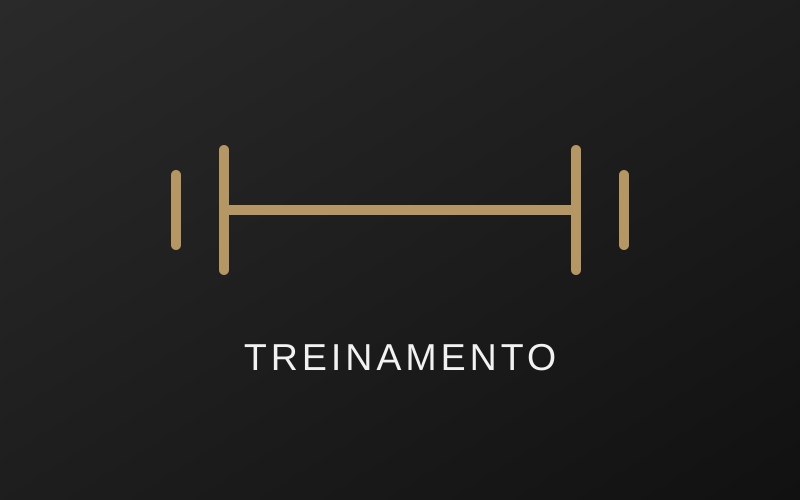

CONSTRUA SUA MELHOR VERSÃO
Conhecimento, disciplina e ciência aplicados ao desenvolvimento muscular.
Explorar treinamentoO que é o FORGE FITNESS
O FORGE FITNESS é um portal educativo sobre musculação e desenvolvimento muscular. Reunimos conceitos de treinamento, exercícios, nutrição e recuperação em uma linguagem clara, para iniciantes e praticantes intermediários.
Conhecer o porquê de cada escolha ajuda a treinar com mais segurança, consistência e autonomia. Este não é um site comercial: o objetivo é informar.
Introdução à hipertrofia
Hipertrofia muscular é o aumento do tamanho das fibras musculares, estimulado principalmente pelo treinamento resistido (com cargas ou resistências), quando há sobrecarga progressiva ao longo do tempo.
O músculo, porém, não cresce apenas durante o treino. O resultado depende de três pilares:
- Treino adequado e progressivo.
- Alimentação com energia e proteínas suficientes.
- Recuperação: sono, descanso e controle da fadiga.
Benefícios da musculação
Desenvolvimento muscular
Aumento de massa muscular com estímulo adequado.
Melhora da força
Mais capacidade de realizar tarefas do dia a dia.
Condicionamento físico
Maior resistência e disposição.
Saúde e qualidade de vida
Associada a benefícios para saúde óssea, metabólica e mental.
Fontes externas confiáveis
Para aprofundar o tema, consulte instituições de referência (os links abrem em nova aba):